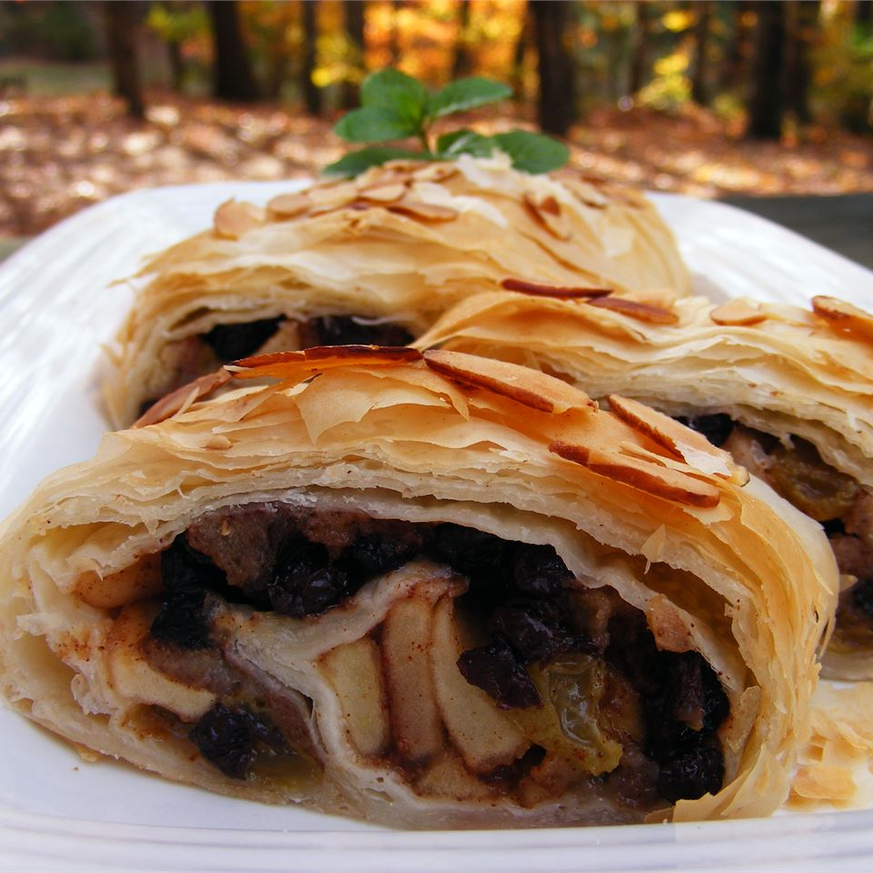

Apple Strudel

Description
Use ready made phyllo pastry and homemade apple filling.
Ingredients
- 1 pound sweet apples -- peeled, cored and thinly sliced
- ¼ cup golden raisins
- ½ teaspoon ground cinnamon
- 2 tablespoons white sugar
- ½ (16 ounce) package phyllo dough
- ¼ cup butter, melted
Steps
- Preheat oven to 400 degrees F (200 degrees C).
- In a bowl, combine apples, raisins, currants, cinnamon, sugar and bread crumbs. Stir well.
- Spread several sheets of pastry generously with melted butter and lay them on atop the other on a baking sheet. Spread the fruit mixture evenly over the top sheet, then roll the sheets up to form a log shape. Brush with melted butter again.
- Bake in preheated oven 30 minutes, until pastry is golden brown and fruit is tende
Check out our other awesome recipes!